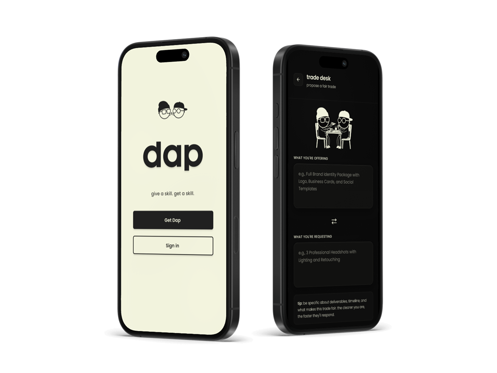
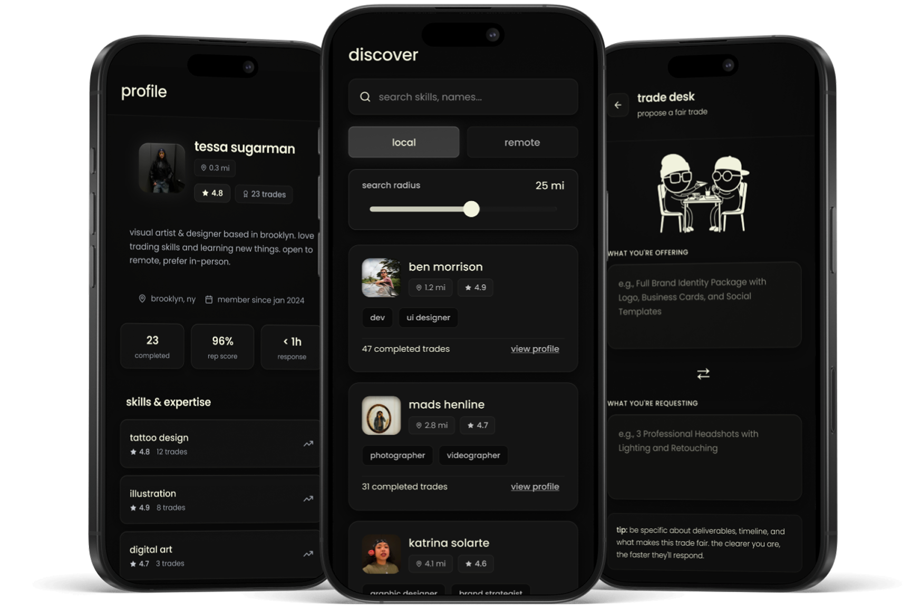
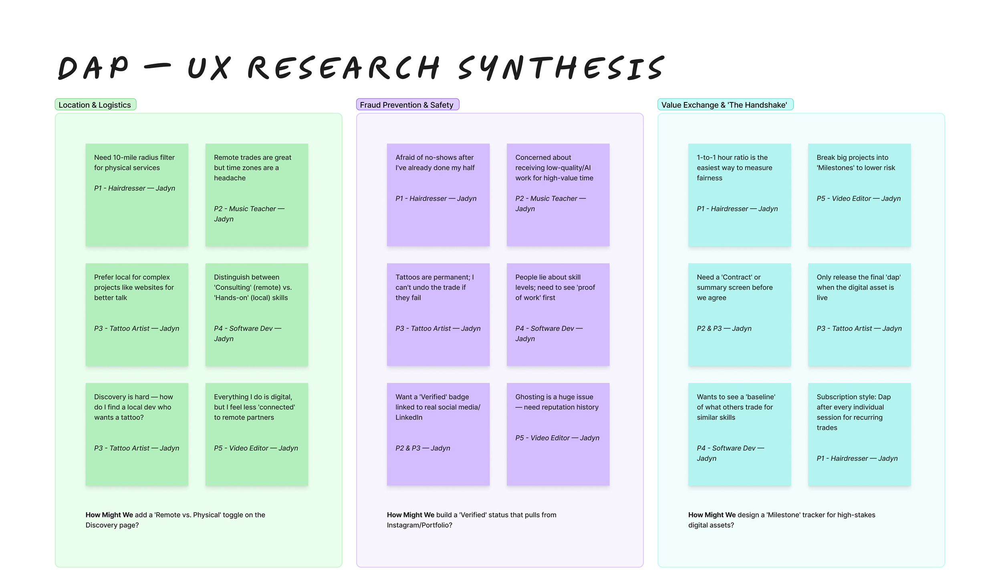
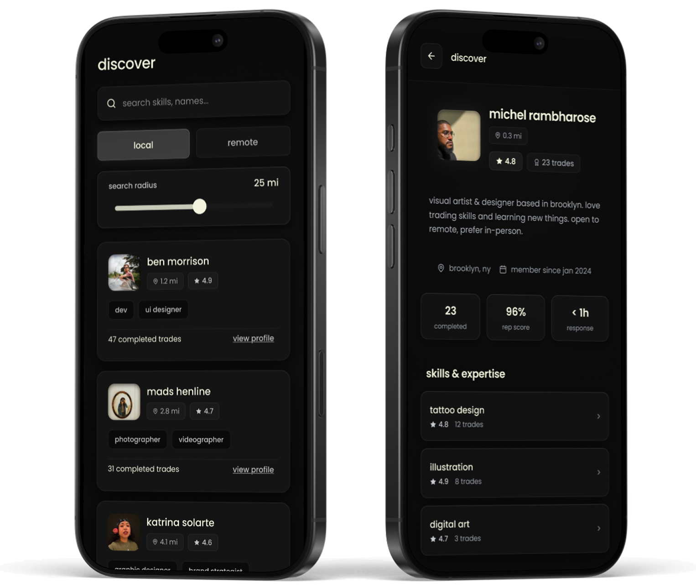
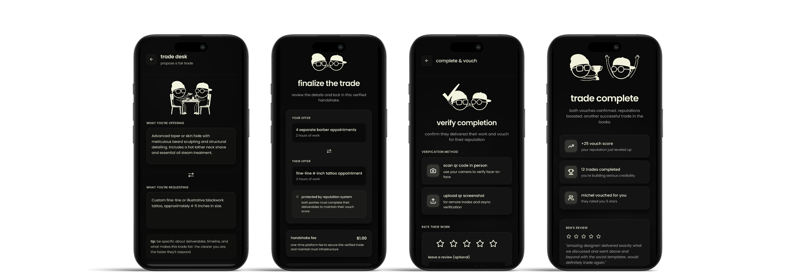
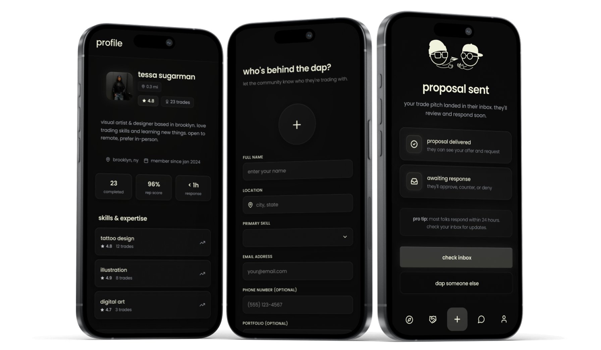

Dap
Trade Skills, Not Money.
A peer-to-peer skill sharing marketplace that turns casual favors into a reliable underground economy built on proximity, reputation, and a $1 handshake.
05 Usability Tests · $1 Handshake Fee

00 — Prototype Walkthrough
See the full Dap trade flow — from discovery to handshake.
01 — The Brief
The gig economy takes a cut. Dap doesn't.
Not a side hustle. Not a marketplace. A new way to get things done.
Most people have a skill someone else needs and vice versa. But there's never been a reliable way to trade them. Cash platforms take fees, freelance marketplaces are intimidating, and informal trades fall apart because nobody shows up. Dap is building a new kind of economy — one where your skills are your currency, accountability is built into the product, and a $1 handshake makes it real.

02 — Research
What breaks a trade before it starts.
I ran embedded usability tests with 5 users across different skill types to understand where trust breaks down in a peer-to-peer exchange. Three clear themes emerged — location and logistics, fraud prevention and safety, and how people define a fair trade.

03 — Design Decisions
Two decisions that defined the product.
The discovery experience was designed to feel like a marketplace; familiar, local, low friction. You search the skill you need, see who's offering it nearby or remotely, and instead of awkwardly asking someone to do something for free, you propose a trade with your own skill. That flip is everything. It removes the power imbalance of asking for a favor and replaces it with an equal exchange — I have something you want, you have something I want, let's make it happen.
During testing we discovered users needed two things before proposing a trade: social proof and proximity. We added vouch scores and distance to every profile card.

→ Vouch scores
Social proof before the first message. Users wouldn't propose a trade without knowing someone was trustworthy.
→ Distance
Proximity matters. Users wanted to know if a trade was actually possible before investing time in a conversation.
Early Trade Desk designs structured offers as itemized line items with a live Trade Balance module calculating fairness in real time. After recognizing that rigid structure limits the kinds of trades people can propose, a haircut for a logo design doesn't fit neatly into a spreadsheet, the layout evolved into open text fields. Letting users describe their offer in their own words keeps the negotiation human.
Making a skill trade as reliable as a cash transaction.

04 — Testing
5 users. 1 trade. Zero flakes.
I ran embedded usability tests to see if users could navigate from discovery to a completed handshake without friction. One clear insight came out of testing that directly changed the design — users said they wouldn't propose a trade without knowing who they were dealing with and how far away they were. Vouch scores and distance were added to every profile card as a result.
✓Vouch scores + distance — added after testing revealed trust and proximity were non-negotiable before a trade proposal.
05 — Some Final Screens
An economy built on skill, trust, and showing up.

06 — Outcome
The underground economy, made reliable. Skills are currency. Showing up is the only rule.
Dap proves that accountability doesn't require complexity, it requires skin in the game. The $1 handshake fee and the open trade desk together create a system where showing up is the only option. Testing confirmed users felt safe, the flow was clear, and the product felt like something they'd actually use.
07 — Reflection
What I'd do differently.
What Worked
The discovery experience landed immediately — users understood the marketplace parallel without being told. Adding vouch scores and distance after testing was the right call and made the product feel trustworthy. The open text Trade Desk felt more human than a structured version.
What I'd Change
I'd spend more time on the matching algorithm. How does Dap surface the right trade partner at the right time? Right now discovery is search-based which puts all the work on the user. A smarter recommendation layer would make the product feel more like it's working for you.